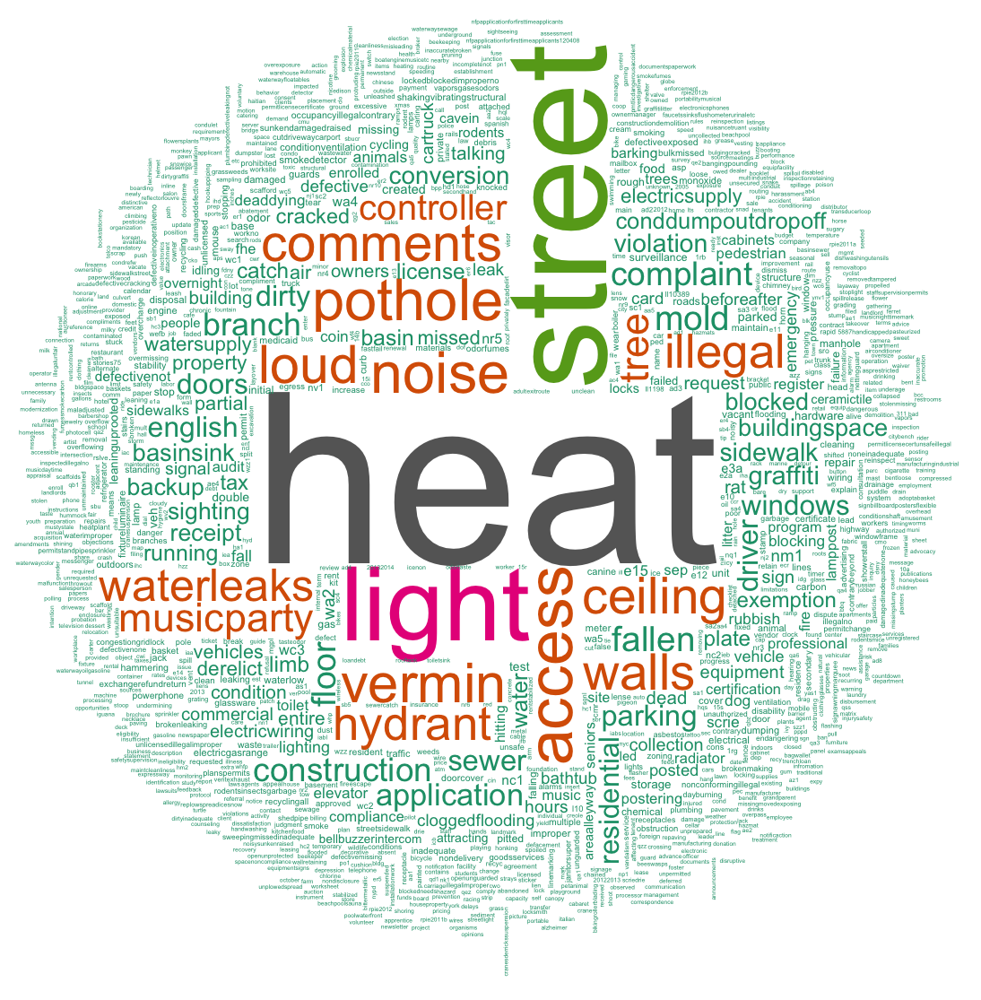

What do New Yorkers complain about?
- 
Nearly half the top 20 highest term frequencies appeared to be seasonal. Looking at the frequency plots of the time series highly cyclical nature is prominent.
Winter seasonal
#1 heat
#5 pothole
Heat tends to be the biggest complaint that peaks during the colder months. Likewise, potholes seem to increase after the winter months have really taken hold, most likely due to the snow and ice forming in the cracks of the streets.
Summer seasonal
#2 street
#6 vermin
#7 loud
#11 noise
In the warmer months, we have a definite uptick in the amount of complaints related to vermin as well as noise levels. The warmer weather leading to the quicker decay of organic matter in trash and the attraction of all sorts of unwanted vermin. The noise level increases as people are spend more time outdoors -- bars and restaurants open their doors and setup outdoor seating, etc.
#12 hydrant
#14 illegal
Interestingly enough, hydrants only come up between May and August during the hottest part of the year. Understandably, as everyone is uncapping hydrants in the heat. The term illegal tends to show up throughout the year, but has a higher peak during the summer months.
#16 music/party
Hurricane Sandy related
The terms -- tree, controller and fallen have significant spikes during the month of October 2012. Most notably, around the time of Hurricane Sandy. This makes sense as the storm most likely resulted in a number of fallen trees, downed power lines, etc. The final term in this category -- mold, however, saw a significant spike in the months following Hurricane Sandy. I believe this can be attributed to the growth of mold after everything became water-logged from the storm since it doesn't appear to match a cyclical pattern.
#15 tree
#17 controller
#18 mold
#19 fallen
Non-seasonally correlated
This category contains all the other high frequency terms that don't seem to follow any cyclical pattern nor match an isolated event. These complaints appear to be consistently noisy with the occasional spikes and drops.